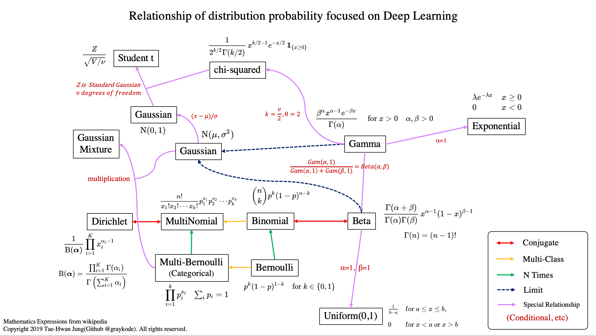
1 | import numpy as np |
Uniform distribution(continuous)
- Uniform distribution has same probaility value on [a, b], easy probability.
1 | def uniform(x, a, b): |
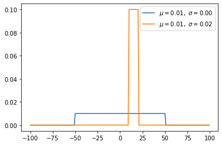
1 | s = np.random.uniform(0,1,1000) |
[<matplotlib.lines.Line2D at 0x11eae0cc0>]
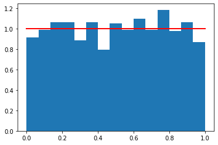
Bernoulli distribution(discrete)
- Bernoulli distribution is not considered about prior probability P(X). Therefore, if we optimize to the maximum likelihood, we will be vulnerable to overfitting.
- We use binary cross entropy to classify binary classification. It has same form like taking a negative log of the bernoulli distribution.
- For Logistic Regression
1 | def bernoulli(p, k): |
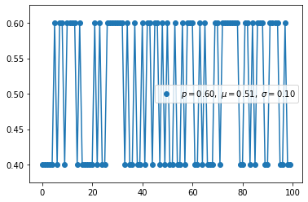
Binomial distribution(discrete)
- Binomial distribution with parameters n and p is the discrete probability distribution of the number of successes in a sequence of n independent experiments.
- Binomial distribution is distribution considered prior probaility by specifying the number to be picked in advance.
for k = 0, 1, 2, …, n, where
1 | def const(n, r): |
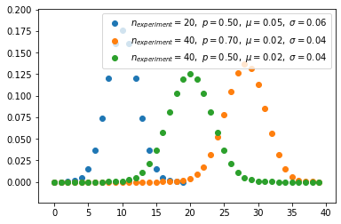
1 | s = np.random.binomial(10, 0.8, 1000) |
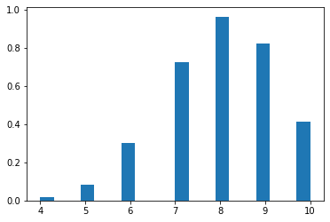
Multi-Bernoulli distribution, Categorical distribution(discrete)
- Multi-bernoulli called categorical distribution, is a probability expanded more than 2.
- cross entopy has same form like taking a negative log of the Multi-Bernoulli distribution.
where $[x = i]$ evaluates to 1 if $x = i$, 0 otherwise. There are various advantages of this formulation
1 | def categorical(p, k): |
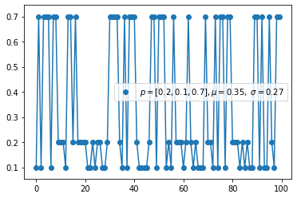
Multinomial distribution(discrete)
- The multinomial distribution has the same relationship with the categorical distribution as the relationship between Bernoull and Binomial.
- For example, it models the probability of counts for each side of a k-sided die rolled n times. For n independent trials each of which leads to a success for exactly one of k categories, with each category having a given fixed success probability, the multinomial distribution gives the probability of any particular combination of numbers of successes for the various categories.
- When k is 2 and n is 1, the multinomial distribution is the Bernoulli distribution. When k is 2 and n is bigger than 1, it is the binomial distribution. When k is bigger than 2 and n is 1, it is the categorical distribution.
for non-negative integers $x_1, \cdots, x_k$.
The probability mass function can be expressed using the gamma function as:
1 | def factorial(n): |
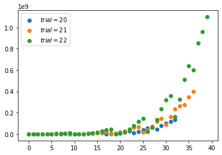
1 | np.random.multinomial(20, [1/6.]*6, size=10) |
array([[1, 1, 2, 3, 8, 5],
[2, 4, 3, 3, 6, 2],
[1, 6, 3, 2, 3, 5],
[5, 3, 4, 4, 2, 2],
[3, 8, 4, 2, 0, 3],
[2, 4, 1, 5, 1, 7],
[6, 3, 2, 4, 3, 2],
[8, 2, 1, 1, 4, 4],
[3, 6, 4, 1, 4, 2],
[3, 2, 3, 3, 6, 3]])
Beta distribution(continuous)
- Beta distribution is conjugate to the binomial and Bernoulli distributions.
- Using conjucation, we can get the posterior distribution more easily using the prior distribution we know.
- Uniform distiribution is same when beta distribution met special case(alpha=1, beta=1).
1 | def gamma_function(n): |
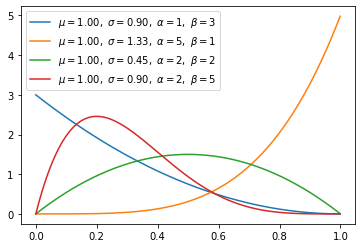
1 | s = np.random.beta(2, 5, size=1000) |
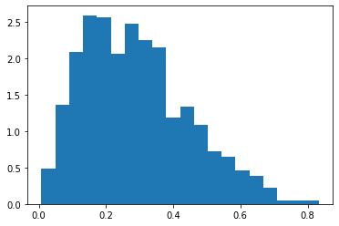
Gamma distribution(continuous)
Gamma distribution will be beta distribution, if $\frac{Gamma(a,1)}{Gamma(a,1) + Gamma(b,1)}$ is same with $Beta(a,b)$.
The exponential distribution and chi-squared distribution are special cases of the gamma distribution.
A random variable X that is gamma-distributed with shape α and rate β is denoted:
The corresponding probability density function in the shape-rate parametrization is:
1 | def gamma_function(n): |
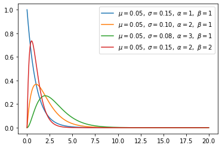
1 | a, b = 2., 2. |
[<matplotlib.lines.Line2D at 0x12cb80c50>]
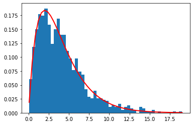
Dirichlet distribution(continuous)
- Dirichlet distribution is conjugate to the MultiNomial distributions. 即Dirichlet分布乘上一个多项分布的似然函数后，得到的后验分布仍然是一个Dirichlet分布。
- If k=2, it will be Beta distribution.
where $\{x_k\}_{k=1}^{k=K}$ belong to the standard $K-1$ simplex, or in other words:
The normalizing constant is the multivariate beta function, which can be expressed in terms of the gamma function
Dirichlet分布可以看做是分布之上的分布。如何理解这句话，我们可以先举个例子：假设我们有一个骰子，其有六面，分别为{1,2,3,4,5,6}。现在我们做了10000次投掷的实验，得到的实验结果是六面分别出现了{2000,2000,2000,2000,1000,1000}次，如果用每一面出现的次数与试验总数的比值估计这个面出现的概率，则我们得到六面出现的概率，分别为{0.2,0.2,0.2,0.2,0.1,0.1}。现在，我们还不满足，我们想要做10000次试验，每次试验中我们都投掷骰子10000次。我们想知道，骰子六面出现概率为{0.2,0.2,0.2,0.2,0.1,0.1}的概率是多少（说不定下次试验统计得到的概率为{0.1, 0.1, 0.2, 0.2, 0.2, 0.2}这样了）。这样我们就在思考骰子六面出现概率分布这样的分布之上的分布。而这样一个分布就是Dirichlet分布。
1 | def normalization(x, s): |
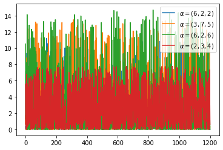
1 | s = np.random.dirichlet((0.2, 0.3, 0.5), 20).transpose() |
1 | s.shape |
(3, 20)
1 | plt.barh(range(20), s[0]) |
<BarContainer object of 20 artists>
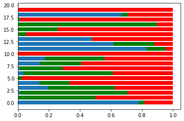
Exponential distribution(continuous)
- Exponential distribution is special cases of the gamma distribution when alpha is 1.
1 | def exponential(x, lamb): |
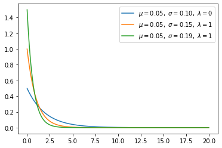
1 | s = np.random.exponential(scale = 0.5, size=1000) |
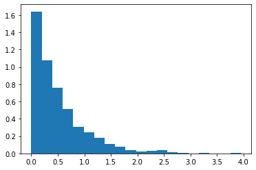
Gaussian distribution(continuous)
1 | def gaussian(x, n): |
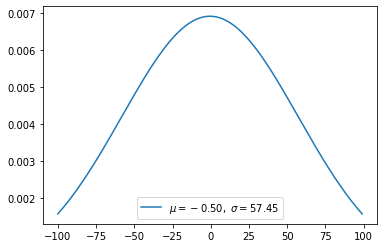
1 | mu, sigma = 0, 0.1 # mean and standard deviation |
[<matplotlib.lines.Line2D at 0x11122d4e0>]
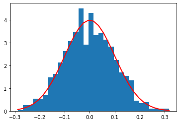
Poisson distribution
- 在一个时间段内事件平均发生的次数服从泊松分布
- e is Euler’s number (e = 2.71828…)
- k! is the factorial of k.
1 | s = np.random.poisson(5, 10000) |
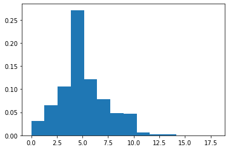
Chi-squared distribution(continuous)
- Chi-square distribution with k degrees of freedom is the distribution of a sum of the squares of k independent standard normal random variables.
- Chi-square distribution is special case of Beta distribution
If $Z_1, \cdots, Z_k$ are independent, standard normal random variables, then the sum of their squares,
is distributed according to the chi-square distribution with k degrees of freedom. This is usually denoted as
The chi-square distribution has one parameter: a positive integer k that specifies the number of degrees of freedom (the number of $Z_i$ s).
The probability density function (pdf) of the chi-square distribution is
1 | def gamma_function(n): |
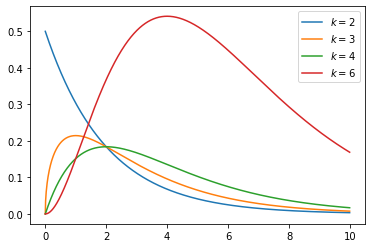
1 | s = np.random.chisquare(4,10000) |
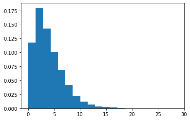
Student-t distribution(continuous)
- Definition
Let $X_1, \cdots, X_n$ be independent and identically distributed as $N(\mu, \sigma^2)$, i.e. this is a sample of size $n$ from a normally distributed population with expected mean value $\mu$ and variance $\sigma^{2}$
Let
be the sample mean and let
be the (Bessel-corrected) sample variance.
Then the random variable
has a standard normal distribution
Student’s t-distribution has the probability density function given by
- $\nu$ is the number of degrees of freedom
- $\Gamma$ is the gamma function.
1 | def gamma_function(n): |
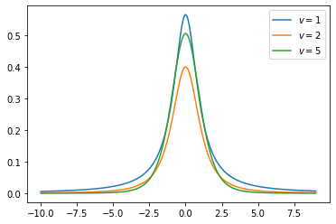
1 | ## Suppose the daily energy intake for 11 women in kilojoules (kJ) is: |
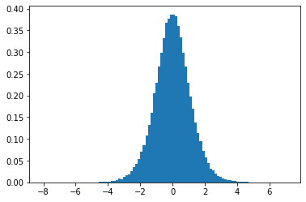
So the p-value is about 0.009, which says the null hypothesis has a probability of about 99% of being true.
1 | np.sum(s<t) / float(len(s)) |
0.0086